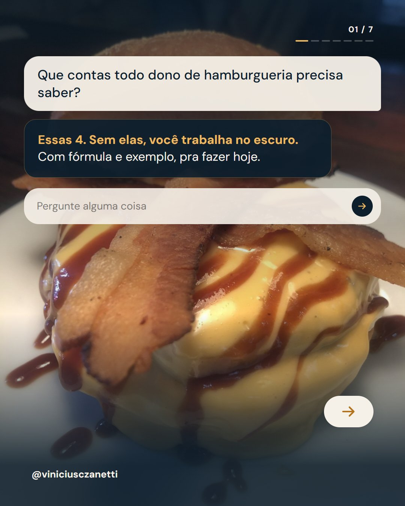

Faturamento não paga conta: as 4 contas que mostram se a hamburgueria dá lucro
Margem de contribuição, ponto de equilíbrio, CMV e reserva de caixa. São as contas que Vinícius Zanetti faz com todo cliente no primeiro mês. Com a fórmula de cada uma e um exemplo para refazer com os números do seu restaurante.
Publicado em 16/11/2026
A loja cheia na sexta e o caixa apertado no dia 10. A cena é comum em hamburgueria e tem uma explicação simples: o dono olha o faturamento e conclui que está tudo bem. Só que o faturamento diz quanto entrou. Não diz quanto sobrou.
O consultor Vinícius Zanetti resumiu o problema num carrossel publicado no Instagram em 18 de outubro. Nele, ele lista as 4 contas que faz com todo cliente no primeiro mês de trabalho: margem de contribuição, ponto de equilíbrio, CMV e reserva de caixa. A seguir, cada uma delas, com a fórmula e o exemplo do próprio carrossel.

"Faturamento não paga conta. O que paga é o que sobra."Vinícius Zanetti, na legenda do carrossel sobre as 4 contas do dono de hamburgueria
No livro Restaurante no Controle, Vinícius descreve o mesmo paradoxo logo na introdução: é possível ter fila na porta e terminar o mês no vermelho, e é possível trabalhar 14 horas por dia sem saber, no fim do mês, se o negócio deu lucro. As 4 contas existem para responder a essa pergunta com número, não com impressão.
Um aviso antes da conta: os valores abaixo são de exemplo, os mesmos do carrossel. Servem para mostrar o caminho. O resultado que importa é o que sai com os números do seu restaurante.
O que é margem de contribuição e como calcular?
Margem de contribuição é quanto sobra de cada lanche depois de pagar o que só existe porque ele foi vendido: os insumos, a taxa do aplicativo e a embalagem. É esse valor que paga o resto da operação, do aluguel ao salário da equipe.
Margem de contribuição = preço - (insumos + taxa do app + embalagem)
Neste exemplo, o burger custa R$ 40 no cardápio. Os insumos somam R$ 12, e a taxa do aplicativo com a embalagem levam mais R$ 8.
| Neste exemplo | Valor |
|---|---|
| Preço do burger | R$ 40 |
| Insumos | R$ 12 |
| Taxa do app e embalagem | R$ 8 |
| Margem de contribuição | R$ 20, ou 50% |
A referência que a Zatti usa é margem de contribuição de pelo menos 35%; de 50% a 55% é considerada boa. No livro, a margem aparece num lugar específico da DRE gerencial: depois do faturamento, saem as deduções (impostos, taxa de cartão e taxa de delivery) e o CMV. O que sobra é a margem. Quem tem salão e delivery precisa fazer a conta por canal, porque o mesmo lanche deixa margens diferentes em cada um.
Como calcular o ponto de equilíbrio do restaurante?
Ponto de equilíbrio é o faturamento que o restaurante precisa atingir só para empatar. Nem lucro nem prejuízo. A conta usa a margem de contribuição em percentual e o custo fixo do mês. É a mesma lógica descrita em artigo da Comunidade Sebrae PR: os custos e despesas fixas divididos pela margem de contribuição.
Ponto de equilíbrio = custo fixo do mês ÷ margem de contribuição (%)
Neste exemplo, o custo fixo é de R$ 30 mil por mês. Com margem de 50%, a conta fica R$ 30 mil ÷ 0,50, ou seja, R$ 60 mil de faturamento só para empatar.
"Abaixo disso, cada mês aberto é prejuízo. Mesmo com a loja cheia."Vinícius Zanetti, no carrossel sobre as 4 contas do dono de hamburgueria
A segunda parte da conta é a que mais surpreende o dono. O lucro não é o faturamento menos o custo fixo. É só a parte do faturamento que passa do ponto de equilíbrio, multiplicada pela margem.
| Neste exemplo | Valor |
|---|---|
| Faturamento do mês | R$ 80 mil |
| Ponto de equilíbrio | R$ 60 mil |
| Faturamento acima do equilíbrio | R$ 20 mil |
| Margem de contribuição | 50% |
| Lucro | R$ 10 mil |
Faturando R$ 80 mil, só R$ 20 mil passam do ponto de equilíbrio, e só metade disso vira lucro. É por isso que o movimento engana. Cada real vendido abaixo dos R$ 60 mil só ajuda a pagar a estrutura. O lucro começa depois dele, e cresce na velocidade da margem, não do faturamento.
Como calcular o CMV do restaurante?
CMV é o custo da mercadoria vendida: quanto a comida come do faturamento. A fórmula é a mesma que o livro atribui à cartilha de CMV da Abrasel e que aparece em artigo da Comunidade Sebrae PR.
CMV = estoque inicial + compras - estoque final
Dividido pelo faturamento do mês, dá o CMV em percentual.
Neste exemplo, o CMV do mês é de R$ 28 mil, sobre um faturamento de R$ 90 mil. Resultado: 31%. Está dentro da faixa que a Zatti considera saudável, de 25% a 33%.
Passou de 33%, o carrossel aponta três suspeitos: desperdício, porção errada ou preço baixo. O detalhe que mais derruba essa conta é usar as compras do mês no lugar do CMV. O blog já mostrou esse erro, com o caso de um cliente, na matéria CMV não é compras do mês.
Quanto de reserva de caixa um restaurante deve ter?
A quarta conta responde a uma pergunta que quase ninguém faz até precisar: se o movimento cair, quantos meses o restaurante aguenta? A conta do carrossel usa o custo fixo como régua.
Reserva de caixa = custo fixo do mês x 3
Neste exemplo, R$ 30 mil de custo fixo vezes 3 dá R$ 90 mil guardados. O Sebrae PR, num material sobre reserva de emergência empresarial, usa a mesma régua com um horizonte maior: custo fixo mensal vezes 6 meses, guardado separado do caixa do dia a dia.
Na prática, a situação que Vinícius mais encontra está longe dos dois números.
"O que mais vejo: reserva zero e cheque especial no mês fraco."Vinícius Zanetti, no carrossel sobre as 4 contas do dono de hamburgueria
Por isso a orientação do carrossel é começar pequeno: juntar primeiro 1 mês de custo fixo, separando todo mês um valor fixo antes de qualquer retirada do dono. Reserva não é a mesma coisa que capital de giro. Capital de giro é o dinheiro que banca o intervalo entre pagar o fornecedor e receber a venda, assunto da matéria Vende bem e falta dinheiro? É capital de giro. A reserva é o colchão para o mês que foge do normal.
Como saber se o restaurante dá lucro?
As 4 contas se encaixam. A margem de contribuição alimenta o ponto de equilíbrio. O CMV é a maior parte do custo que sai da margem. E a reserva só se forma quando o faturamento passa do equilíbrio com folga. Quando uma delas está errada, as outras herdam o erro.
O livro chama essa etapa de Estrutura: o momento em que o restaurante deixa de ser gerido pela memória e pelo improviso. Não é burocracia. É saber quanto o negócio ganha, quanto gasta e quanto sobra.
O que o dono de hamburgueria e pizzaria faz com isso
- Calcule a margem de cada item do cardápio. Comece pelos 5 mais vendidos. Item abaixo de 35% merece revisão de ficha técnica, porção ou preço.
- Some o custo fixo do mês e ache o ponto de equilíbrio. Aluguel, salários com encargos, contas de consumo, contador, sistema. Divida pela margem média.
- Faça o inventário no último dia do mês. Sem a contagem, não existe CMV, existe estimativa.
- Defina a meta de reserva. Primeiro 1 mês de custo fixo, depois 3. O valor sai antes da retirada do dono, não do que sobrar.
"Faz essas 4 contas uma vez por mês. Em 30 minutos você sabe se o restaurante dá lucro ou só dá trabalho."Vinícius Zanetti, no carrossel sobre as 4 contas do dono de hamburgueria
Perguntas frequentes
Qual é a margem de contribuição ideal para hamburgueria?
A referência usada pela Zatti é margem de contribuição mínima de 35%, considerando boa a faixa de 50% a 55%. A conta é o preço menos insumos, taxa do aplicativo e embalagem, de preferência separada por canal.
Como calcular o ponto de equilíbrio de um restaurante?
Divida o custo fixo do mês pela margem de contribuição em percentual. Com R$ 30 mil de custo fixo e margem de 50%, o ponto de equilíbrio é de R$ 60 mil de faturamento por mês.
Qual é o CMV saudável para restaurante?
A referência da Zatti é de 25% a 33% do faturamento, com CMV calculado por inventário: estoque inicial mais compras menos estoque final. Acima disso, vale olhar desperdício, porção e preço.
Quanto um restaurante deve ter de reserva de caixa?
O carrossel de Vinícius Zanetti usa 3 meses de custo fixo como meta e sugere começar com 1 mês. O Sebrae PR, em material sobre reserva de emergência, usa 6 meses de custo fixo.
Fontes
- Vinícius Zanetti no Instagram: carrossel sobre as 4 contas do dono de hamburgueria (18/10/2026).
- Vinícius Zanetti, Restaurante no Controle: introdução e capítulo Estrutura (DRE gerencial, margem de contribuição e CMV pela cartilha da Abrasel).
- Comunidade Sebrae PR: Ponto de equilíbrio: entenda mais.
- Comunidade Sebrae PR: Entendendo o CMV de restaurante (02/10/2024).
- Sebrae PR: Reserva de emergência empresarial: quanto sua empresa precisa ter?